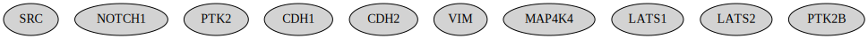

Map tissue expression
This notebook explores how you can explore whether the nodes in your network are expressed in a tissue of interest. The annotations are accessed from the Annotation object of Omnipath, and are based on expression data from the Human Protein Atlas.
[1]:
%%time
from neko.core.network import Network
from neko._visual.visualize_network import NetworkVisualizer
from neko.inputs import Universe
from neko._annotations.gene_ontology import Ontology
import omnipath as op
CPU times: user 6.01 s, sys: 1.56 s, total: 7.57 s
Wall time: 5.17 s
1. Import genes as network nodes
[2]:
genes = ["SRC", "NOTCH1", "FAK", "CDH1", "CDH2", "VIM", "MAP4K4", "LATS1", "LATS2", "PTK2B"]
[3]:
new_net1 = Network(genes, resources = 'omnipath')
[4]:
#Print node dataframe
new_net1.nodes
[4]:
| Genesymbol | Uniprot | Type | |
|---|---|---|---|
| 0 | SRC | P12931 | NaN |
| 1 | NOTCH1 | P46531 | NaN |
| 2 | PTK2 | Q05397 | NaN |
| 3 | CDH1 | P12830 | NaN |
| 4 | CDH2 | P19022 | NaN |
| 5 | VIM | P08670 | NaN |
| 6 | MAP4K4 | O95819 | NaN |
| 7 | LATS1 | O95835 | NaN |
| 8 | LATS2 | Q9NRM7 | NaN |
| 9 | PTK2B | Q14289 | NaN |
2. Check if the genes are annotated in the tissue of interest (e.g., in colorectal cancer)
[5]:
annot = Ontology()
results_df = annot.check_tissue_annotations(genes_df = new_net1.nodes, tissue = 'colorectal cancer')
print(results_df)
Genesymbol in_tissue
0 SRC True
1 NOTCH1 True
2 PTK2 True
3 CDH1 True
4 CDH2 True
5 VIM True
6 MAP4K4 True
7 LATS1 True
8 LATS2 True
9 PTK2B True
3. Color nodes based on their presence/absence in the tissue of interest
The tissue_mapping functions highligts as light blue all the nodes of the network that are expressed in the used-defined system.
[6]:
network_visualizer = NetworkVisualizer(new_net1)
network_visualizer.tissue_mapping(results_df)
network_visualizer.render()

[ ]: